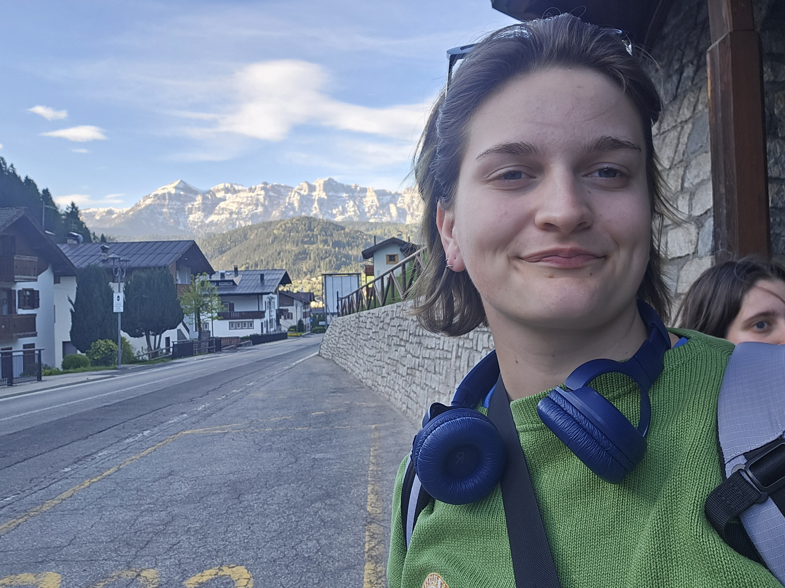

Bloomino
Short project description goes here.
IMAGE PLACEHOLDER
DESIGN I'm a third year Biomedical Engineering Technology student at NJIT who cares about how people experience the technology designed for them.
I'm especially interested in how biomedical design and education can make medical devices more accessible. I like asking questions, learning from different perspectives, and turning complex ideas into personalized solutions.
Contact me
Follow the branches. Tap a milestone to explore its work.
Short project description goes here.
Short project description goes here.
Short project description goes here.
Short project description goes here.
Short project description goes here.
Short project description goes here.
Short project description goes here.
A few ideas in motion
New Jersey Institute of Technology · Newark, NJ
Third-year student building a foundation in biomedical design, medical devices, and technology that puts people first.
Have an idea, a question, or want to talk about people-first technology? I’d love to hear from you.